September 9, 2026. Three user-recorded clips: 504 complete sweeps, zero clipped ADC samples. RF hashes and archive CRCs verified. All analysis used existing files offline; no physical acquisition or programming occurred.
The comparison is limited by probe movement. The user reports some movement between presets, with an uncertain amount. Previous context also includes rib shadowing. The three views are not controlled repeats, and the heart itself is moving. These results do not isolate an electronics fault or establish an optimal preset.
Each uses exactly the same reconstruction/display: 2-5 MHz, CF off, one sweep, 75% apodization, channels 25/46 excluded, 95 dB / +15 dB, curve 1. Previews sample every fourth RF sweep at approximately real time. The clips loop independently; corresponding displayed moments are not synchronized cardiac phases.
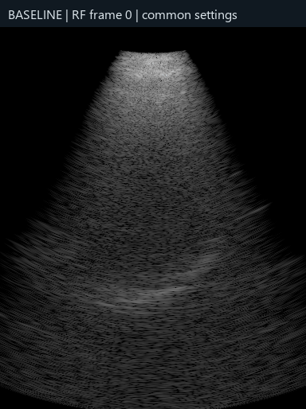
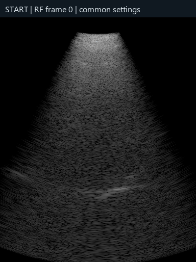
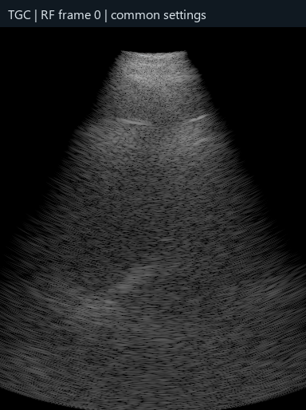
| Clip | Sweeps | Duration | Valid | Clipped samples | TGC |
|---|---|---|---|---|---|
| Baseline | 188 | 4.99 s | 188 | 0 | 1600 to 1600 |
| Start | 127 | 3.35 s | 127 | 0 | 1600 to 1600 |
| Tgc | 189 | 5.03 s | 189 | 0 | 1000 to 3400 |
All three use 48 elements, 8020 samples per element at 40 MSPS, a 16 µs receive offset, 313 µs gap and the same commanded chirp. The aperture period is nominally 26.64 ms. Manual metadata still lacks runtime bitstream/register readback. Large lifetime timeout/resync counters do not describe losses within these selected clips: each saved sweep is complete.
Start is a processing/display alternative. It changes the band from 2-5 to 2-4 MHz and the display from 95 dB / +15 dB to 80 dB / +30 dB. It does not increase acquisition sensitivity. The TGC clip's saved review curve was additionally changed from 1 to 0.67; that difference is removed in the common comparisons.
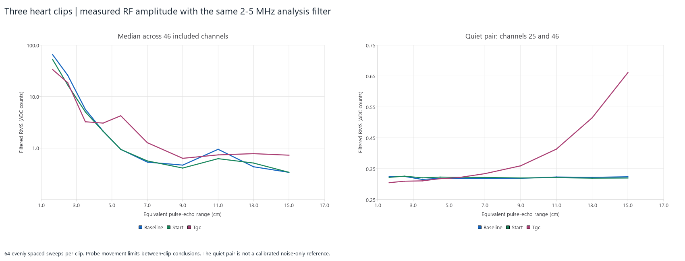
| Equivalent range | Baseline | Start | TGC |
|---|---|---|---|
| 5-6 cm | 0.944 / 0.318 | 0.943 / 0.322 | 4.250 / 0.321 |
| 6-8 cm | 0.534 / 0.319 | 0.563 / 0.322 | 1.274 / 0.334 |
| 8-10 cm | 0.467 / 0.319 | 0.410 / 0.320 | 0.633 / 0.359 |
| 10-12 cm | 0.947 / 0.323 | 0.623 / 0.321 | 0.738 / 0.413 |
| 12-14 cm | 0.434 / 0.322 | 0.512 / 0.319 | 0.780 / 0.515 |
| 14-16 cm | 0.338 / 0.324 | 0.339 / 0.320 | 0.728 / 0.661 |
Each entry: median RMS of the 46 included channels / median RMS of quiet channels 25 and 46, in ADC counts. A fourth-order Butterworth analysis filter and 64 evenly spaced valid sweeps are used per clip. These are signal-plus-noise measurements, not beamformed SNR or verified anatomical depths.
The TGC clip has much more energy near 5-6 cm, but baseline has more near 10-12 cm. Near 14-16 cm, TGC raises the quiet comparison from about 0.32 to 0.66 counts while the included-channel median is only 0.73. Much of that far-field brightness is therefore consistent with amplified noise. Neither the amplitude differences nor the images establish a uniform tissue benefit.
The original longer recording had about 0.35 counts RMS at 10-12 cm, compared with 0.95 in this new baseline clip at the same nominal acquisition settings. That demonstrates substantial capture-to-capture variation, not a fixed absence of signal at that range. The RF alone does not identify the reflector or why its visibility changed.
There are broad echoes and arcs in these clips, but no convincing chamber boundaries were established by the replay comparisons. Additional gray level and a smoother-looking texture are not sufficient evidence of resolved tissue. No anatomical labels or health conclusions are assigned.
A bounded RF time-shift check improved some adjacent-frame correlations, but did not reveal a reliable global motion correction. In TGC at 8-12 cm, the median best-shift correlation was approximately 0.19, versus 0.16 for the quiet controls; the search itself increases random correlations. In the 4-6 cm gate it rose from 0.014 at zero lag to 0.36, but remains variable. These statistics mix motion, noise and changing scatterers and do not establish velocity or prove a timing bug.
The TGC preset now records this limited validation: 189 complete user-recorded sweeps, no clipping, gain-dependent noise increase, no proven tissue-image improvement. Its operational settings remain unchanged.
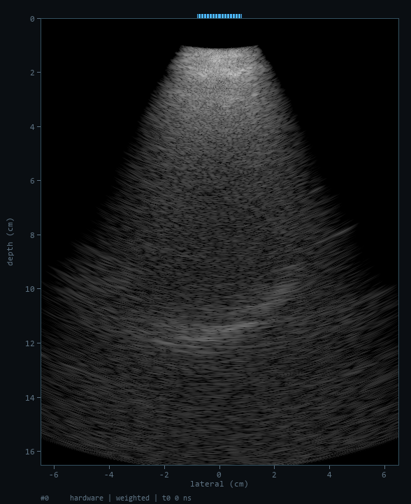
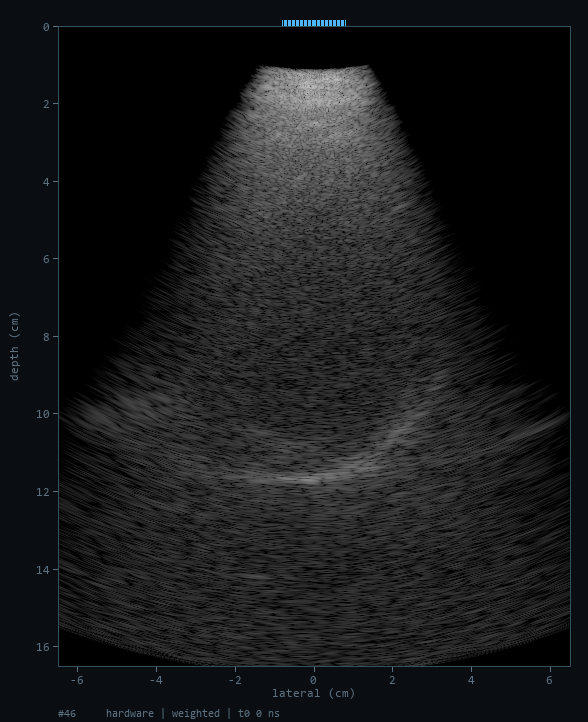
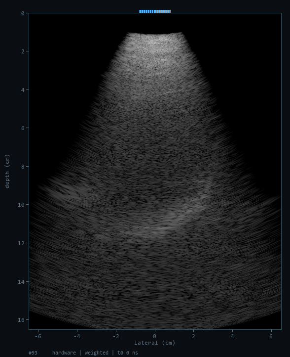
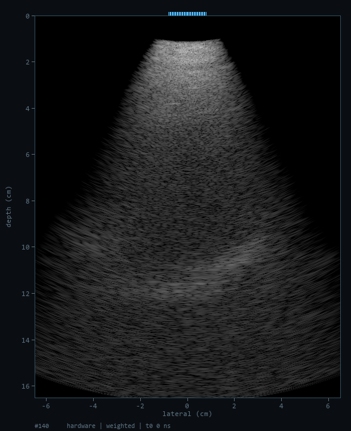
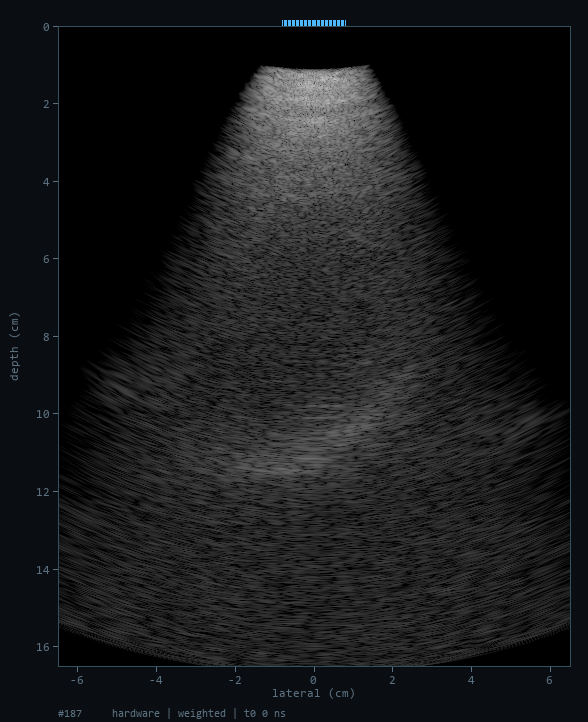
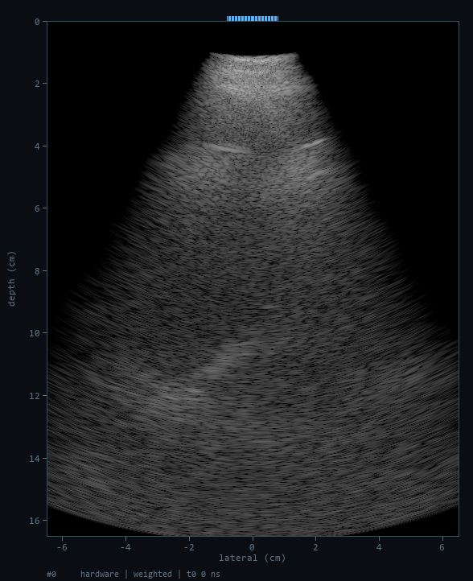
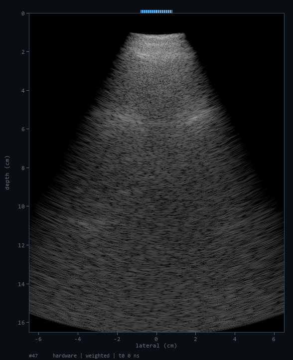
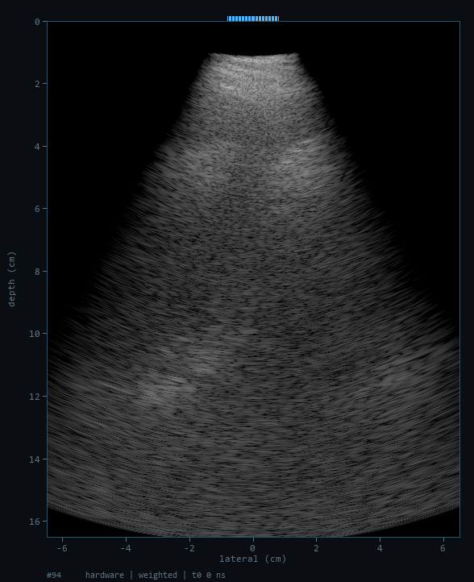
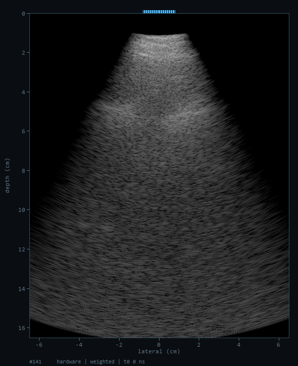
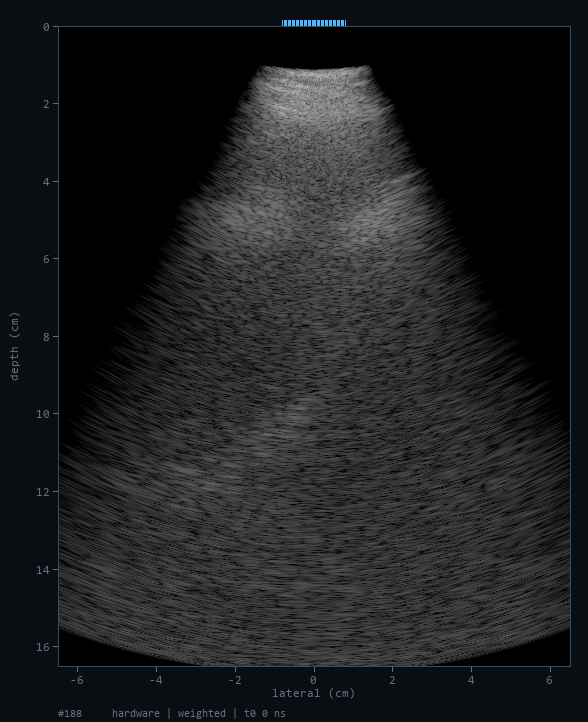
Baseline RF measurements · Start RF measurements · TGC RF measurements · Detailed comparison notes
Each rendered still has saved settings, a linear magnitude array and trial metadata. Cine JSON files list frame indices, display settings, source hashes and timing. The 21 still renders and 127 cine preview frames use the production receive pipeline and shaders. Wire-specific metrics automatically emitted by the harness were not used as tissue-contrast scores. Source files were read-only and remain unchanged.